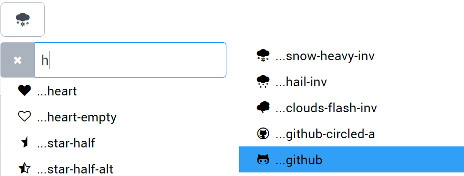
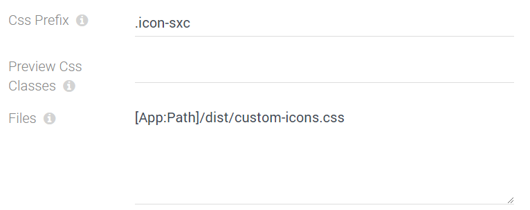

Field Input-Type string-font-icon-picker
Use this field type to create input-fields which let the user pick an icon. It stores a string/text data. It's an extension of the basic string field type.
Features
- shows all icons from the icon-library
- allows searching
- supports libraries using prefixes (like font-awesome, which use
fa-iconname) - supports libraries using double classes (like glyphicons, which use
glyphicons glyphicons-plus) - supports custom libraries you can build, for example using fontello - see instructions
- lets you auto-load more css-files to load icon-definitions on the fly
Result
This is what it looks like for the user:
Configuring a String-Font-Icon-Picker
This shows the configuration dialog:
- CSS Prefix tells the UI to find all css-classes that start with this, and build icons with them
- Preview CSS Classes this tells the GUI to add this while showing a preview for icons in the library (so the preview works for Glyphicons etc.)
- Files tells the UI to load CSS files
- Important they should usually be in your project, because the UI-JavaScripts can't scan CSS files loaded from externally, like from a CDN
- Use the token [App:Path] to ensure that it's always loaded from the right
Read more
- Read this post & watch the video which we created when we introduced it
History
- Introduced in EAV 4.0 2sxc 8.4